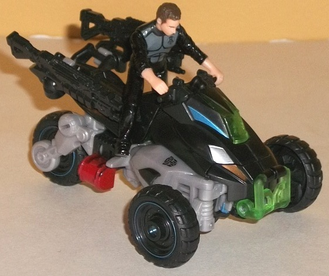
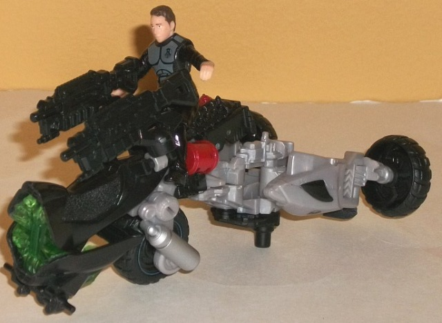
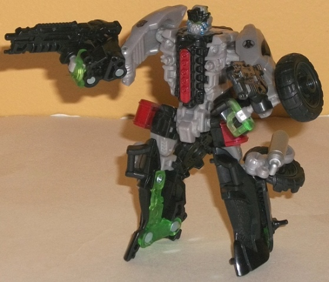
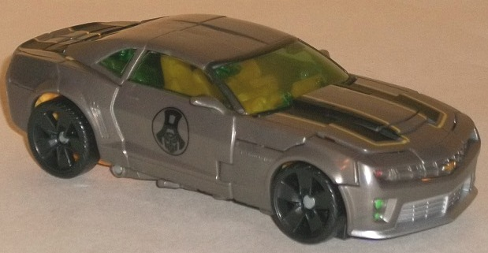
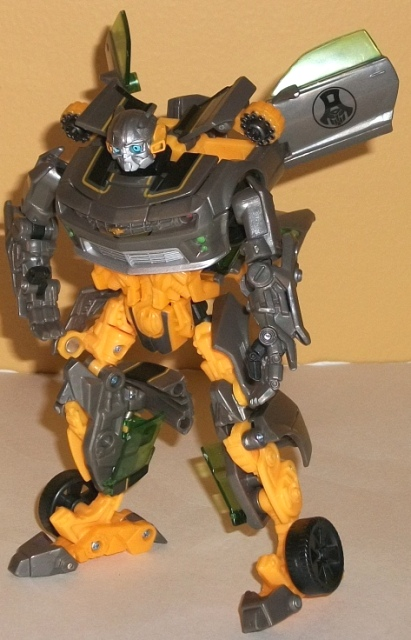

"Daredevil
Squad" set (K-Mart Exclusive)
"Daredevil
Squad" set (K-Mart Exclusive)
Set Price
: $20 U.S.
Also Contains
: "Autobot Alliance"
patch
Overall Rating
: 8.9
(NOTE: Because this set is composed of repaints,
this is not a full-blown review. This mainly covers any changes made to
the set and the color scheme, and merely compares it to the original versions
of these molds. For a review on the original DotM Backfire toy, go
here
.
For a review on RotF Cannon Bumblebee, go
here
.)
Backfire
w/ Sam Witwicky



Allegiance
: Autobot
Size
: Human Alliance Deluxe
Difficulty of Transformation to Weapon
Mode
: Easy
Difficulty of Transformation to Robot
Mode
: Easy
Color Scheme
: Light milky gray,
black, transparent green, and some metallic silvery blue, silver, metallic
copper, and moderately dull red
Individual Rating
: 9.0
Backfire's redeco keeps
mostly the same colors as his mass-release version-- black and gray-- but
the shade of gray is noticeably lighter and less greenish-tan on this release,
and it's a secondary color this time around, with black being the main
color. I've never been a fan of the light milky gray plastic, and I think
it's used way too much on Movie line TFs-- but other than that, Backfire's
color scheme looks pretty boss. The black wouldn't look all that great
by itself, but the transparent green plastic used for the barrel of the
weapon mode and the windshield and bumper of the vehicle mode is a particularly
striking shade of the color, and complements the black and gray extremely
well. (Given Backfire's excellent light piping in robot mode, it looks
especially great on his robot optics.) There's also a few other colors
used as accents- namely silver and copper for the headlights, and some
red for his fuel tanks and the middle of his engine block on his robot
chest. Both also contrast against the black quite well, and keep
any
of Backfire's modes from looking boring, but the vehicle mode in particular.
There's also a bit of metallic silvery blue on the sides of his windshield
and around the wheels, which, though subtle, looks quite slick as well.
As for Backfire's Human Alliance partner, it's a straight repaint of the
Sam Witwicky figure that came with
Human
Alliance Bumblebee
, but with paint apps that make him look like he's
wearing bulletproof armor and an "Autobot Alliance" symbol on his chest.
(I honestly find this funny, picturing that semi-goofy character all decked
out in military armor.)
No mold changes have
been made to this version of Backfire.
Backfire Tech Specs
:
Strength: 4.0
Intelligence: 8.0
Speed: 8.0
Endurance: 3.0
Rank: 4.0
Courage: 9.0
Fireblast: 4.0
Skill: 9.0
Bumblebee


Allegiance
: Autobot
Size
: Deluxe
Difficulty of Transformation
: Medium
Color Scheme
: Orangish yellow, moderately
dark metallic gray, and some black, transparent light bluish green, silver,
metallic copper, light green, light sky blue, and light red
Individual Rating
: 8.7
It's rather bizarre that
they included a redeco of the Cannon Bumblebee mold in with this set as
opposed to a redeco of the Human Alliance Bumblebee toy-- this toy clearly
isn't scaled with Human Alliance figures, being too small overall, and
can't really interact with the Sam Witwicky minifig in any meaningful way.
That aside, this color scheme seems to be a bit of a "Stealth Bumblebee
lite" switcheroo scheme, with most of the orangish yellow bits relegated
to robot mode while the gray parts are now mostly on the vehicle mode.
The orangish yellow is of a slightly brighter, louder shade that on most
other Movie Bumblebee toys, but it does make for an okay brighter color
to contrast against all the gray. Speaking of the gray, you'd expect from
the description of Bumblebee's vehicle mode for it to be exceptionally
dull-looking, but the shade used is actually darker than normal, with a
bit of a metallic swirl in the plastic-- this makes it look considerably
more eye-catching, though it still doesn't quite fit what I would call
a truly exceptional color scheme. The vehicle mode is where the bulk of
the paint apps turn up on this release; Bumblebee still has his characteristic
black stripes, but they're outlined with that orangish-yellow in vehicle
mode, which looks quite nice. He's also got the "Autobot Alliance" symbols
that are on the K-Mart DotM exclusives on his side doors, but what really
looks great are the combination of the silver grill, red and green headlights,
and bronze Chevrolet symbol on his front bumper/robot chest. The combination
of those accent colors in such a small space looks a bit wacky, but not
overly so, and gives a bit more uniqueness to Bumblebee's color scheme.
(His taillights are painted light red, too.) In robot mode, his paint apps
are mostly gray or black to help make the orangish-yellow not so prevalent,
as well as the usual silver paint mask on his face and blue used for his
eyes; nothing particularly noteworthy paint-wise in that mode.
No mold changes have
been made to this version of Bumblebee.
Bumblebee Tech Specs
:
Strength: 6.0
Intelligence: 8.0
Speed: 6.0
Endurance: 5.0
Rank: 5.0
Courage: 10.0
Fireblast: 3.0
Skill: 9.0
The "Daredevil Squad"
set is admittedly a bit odd-- with a Human Alliance-scaled deluxe figure
paired with a non-Human Alliance-scaled one-- but both toys are pretty
good molds with great-to-excellent color schemes. The only issue many may
have is that, yes, this 2-pack has ANOTHER deluxe Bumblebee repaint. At
least it's a bit different this time around, with some unique paint apps.
Plus, retailing for $20 U.S., it's slightly cheaper than if you were to
buy the two molds separately, and you get a cool patch with the set. If
you don't have a Cannon Bumblebee toy (or simply don't care about having
a ton of Bumblebees), than with the great-looking Backfire this set is
an easy recommendation.
"Daredevil Squad" Bio:
Though his status was never official,
Sam was considered an important part of the alliance between humans and
Autobots. He was even assigned Backfire as a second partner. Together with
Bumblebee, they engaged in many dangerous missions spying on and stalking
Decepticon agents.
Reviews by Beastbot
Back to Transformers:
Dark of the Moon Index